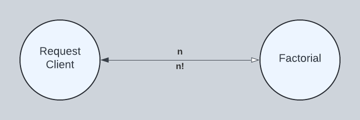

Functions
Factorial

Programming Factorial
actor Factorial() in
func fact(x) in
func fact_cps(n, k) in
if n < 2 then k
else fact_cps(n - 1, n * k) end
end
fact_cps(x, 1)
end
handle ask x in
fact(x)
end
end
Running Factorial
public static final String SOURCE = """
actor Factorial() in
func fact(x) in
func fact_cps(n, k) in
if n < 2 then k
else fact_cps(n - 1, n * k) end
end
fact_cps(x, 1)
end
handle ask x in
fact(x)
end
end""";
public static void perform() throws Exception {
ActorRef actorRef = Actor.builder()
.spawn(SOURCE);
Object response = RequestClient.builder()
.sendAndAwaitResponse(actorRef, Int64.of(10), 100, TimeUnit.MILLISECONDS);
checkExpectedResponse(Int64.of(3628800), response);
}